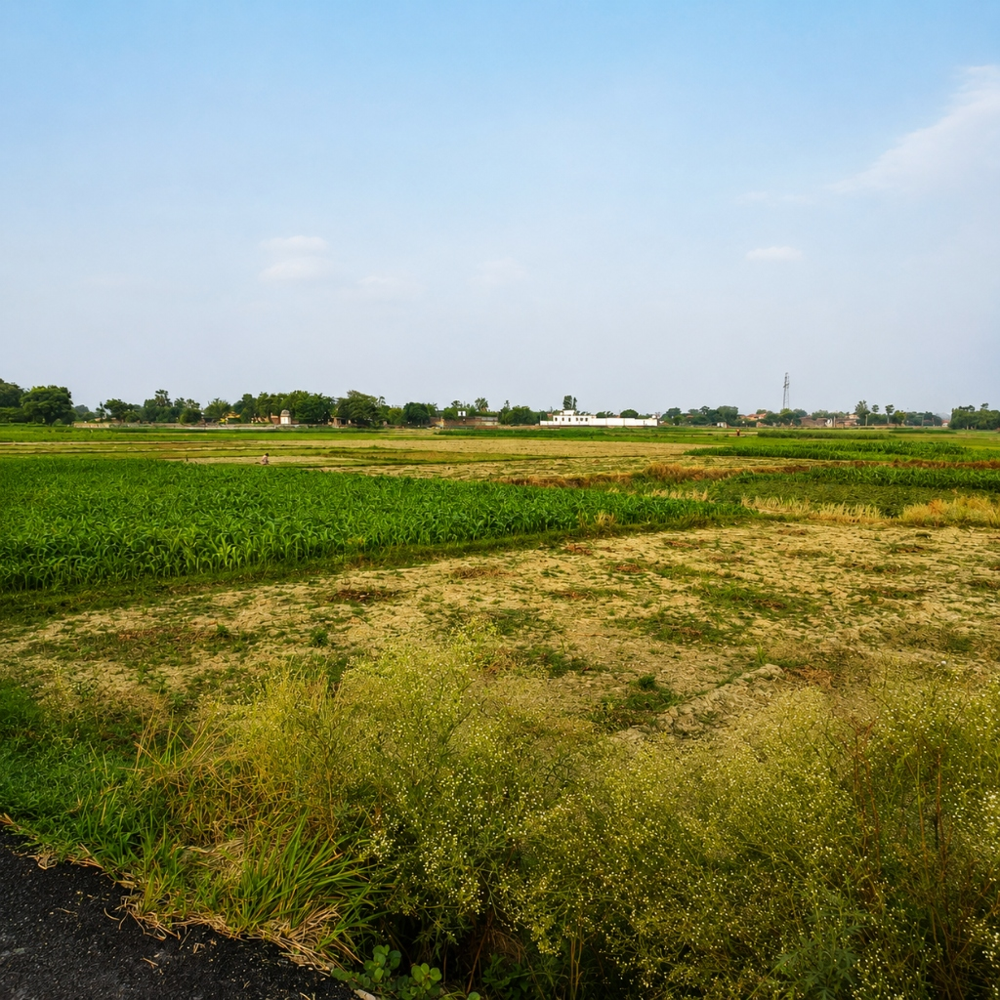
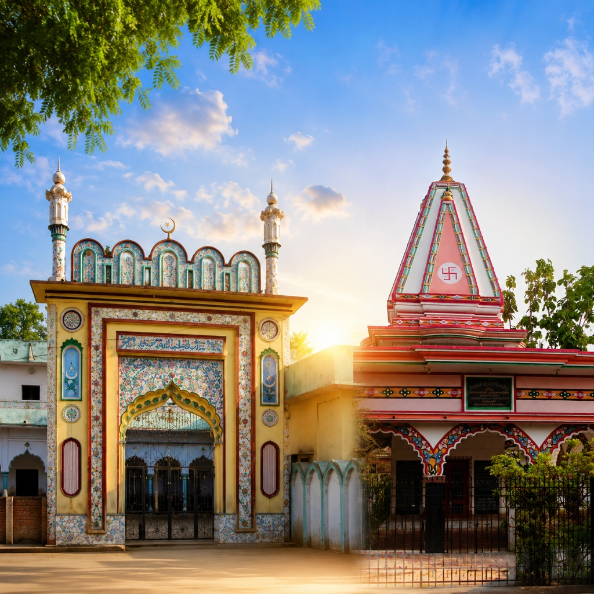
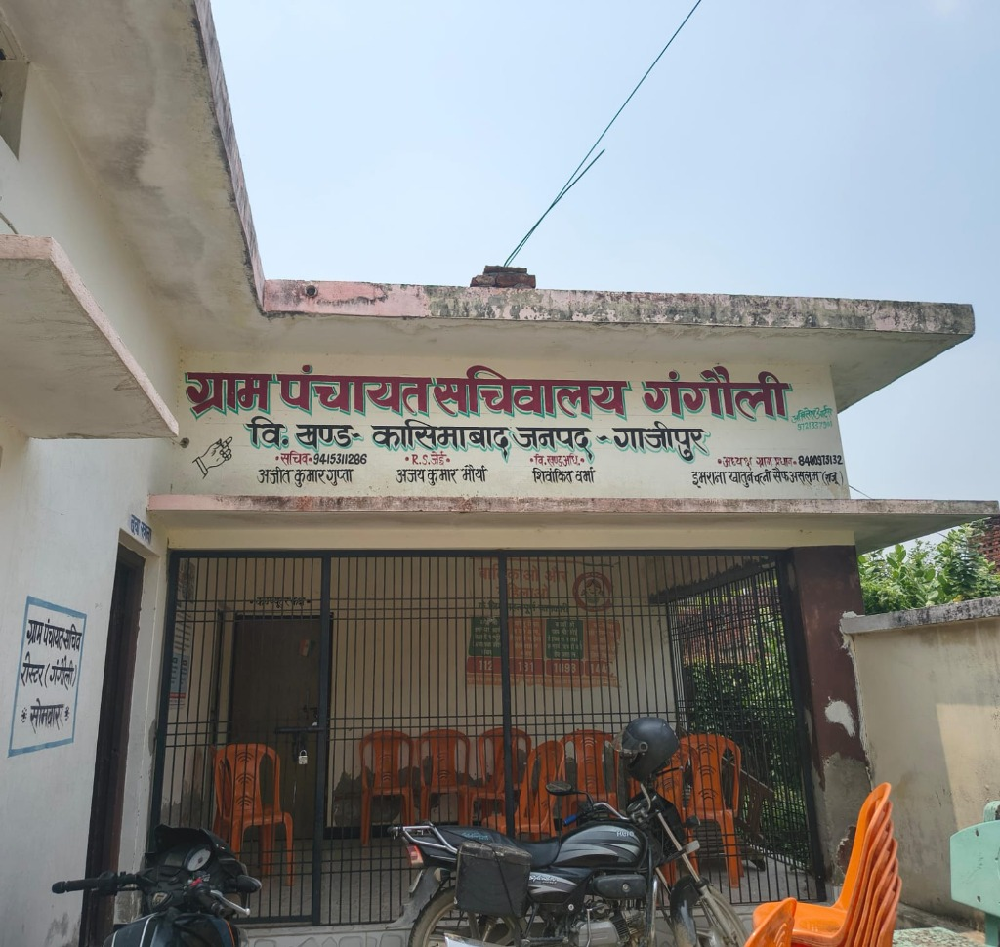
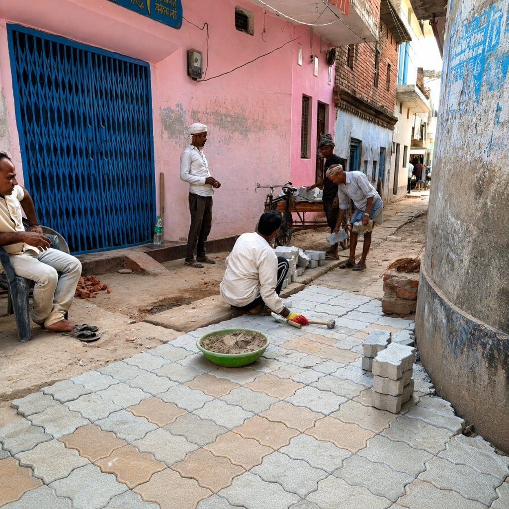
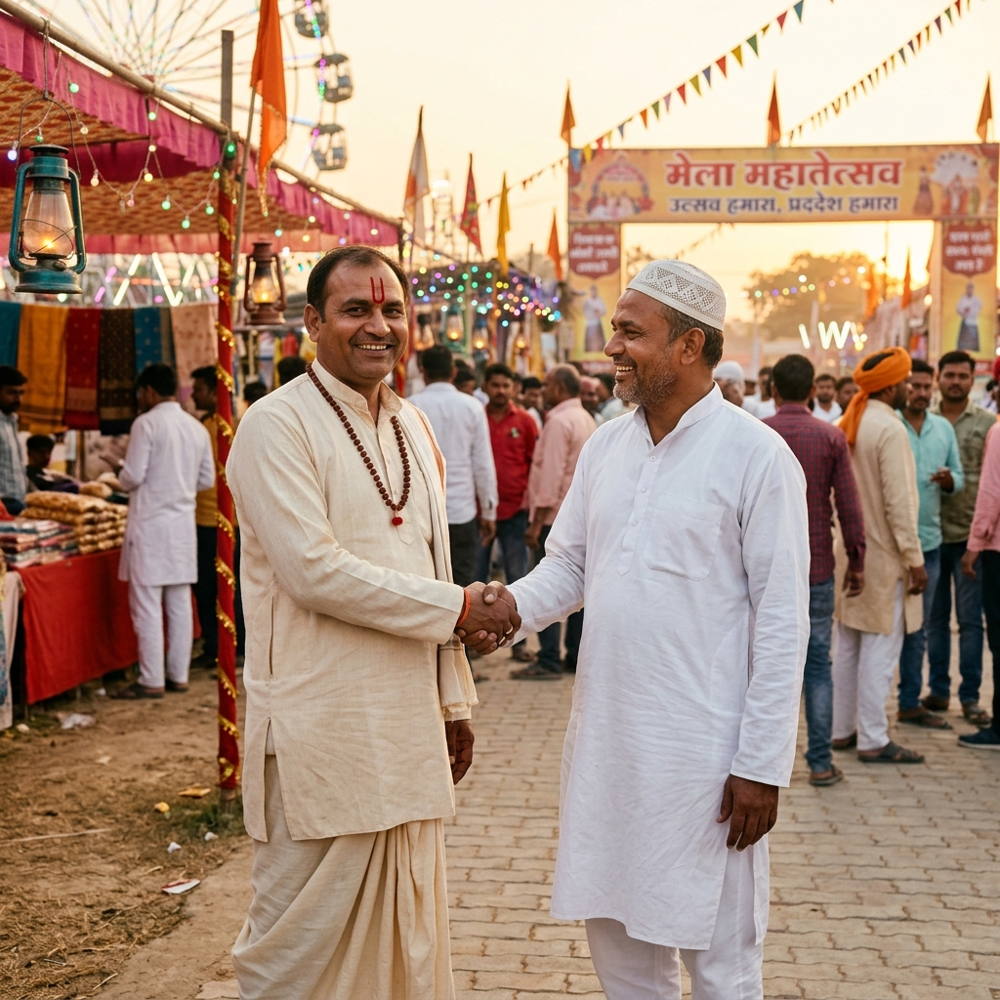

The Heartbeat of Our Village हमारे गाँव की धड़कन
Gangauli thrives across every dimension of rural life — from fertile fields to spiritual spaces. गंगौली ग्रामीण जीवन के हर आयाम में जीवंत है — उपजाऊ खेतों से लेकर आध्यात्मिक स्थलों तक।

Agricultureकृषि
Fertile lands along the Ganga plains produce wheat, rice, and mustard — the backbone of Gangauli's livelihood. गंगा के मैदानों की उपजाऊ भूमि गेहूं, चावल और सरसों उगाती है — गंगौली की आजीविका की रीढ़।

Educationशिक्षा
With primary schools, madrasas, colleges and private institutions, Gangauli is committed to quality education for all. प्राथमिक विद्यालय, मदरसे, कॉलेज और निजी संस्थानों के साथ गंगौली सभी के लिए गुणवत्तापूर्ण शिक्षा के प्रति प्रतिबद्ध है।

Religious Sitesधार्मिक स्थल
Ancient temples and mosques stand side by side, symbolizing the communal harmony that defines Gangauli. प्राचीन मंदिर और मस्जिदें साथ-साथ खड़ी हैं, जो गंगौली की साम्प्रदायिक सद्भावना का प्रतीक हैं।

Healthcareस्वास्थ्य
Primary Health Centers and community health workers serve the village with basic medical facilities round the year. प्राथमिक स्वास्थ्य केंद्र और सामुदायिक स्वास्थ्य कार्यकर्ता साल भर बुनियादी चिकित्सा सुविधाएं प्रदान करते हैं।

Developmentविकास
New roads, drainage systems, and infrastructure projects are transforming Gangauli into a model village. नई सड़कें, नाली प्रणाली और बुनियादी ढाँचे की परियोजनाएं गंगौली को एक आदर्श गाँव में बदल रही हैं।

Festivals & Cultureत्योहार और संस्कृति
Eid, Holi, Diwali, and local fairs are celebrated with equal enthusiasm, uniting the village in joy. ईद, होली, दिवाली और स्थानीय मेले समान उत्साह के साथ मनाए जाते हैं, जो पूरे गाँव को खुशी में एकजुट करते हैं।

Gangauli Times on Facebook गंगौली टाइम्स — Facebook पेज
Official live feed from facebook.com/gangaulitimes facebook.com/gangaulitimes से सीधे लाइव पोस्ट्स एवं अपडेट्स
गंगौली टाइम्स